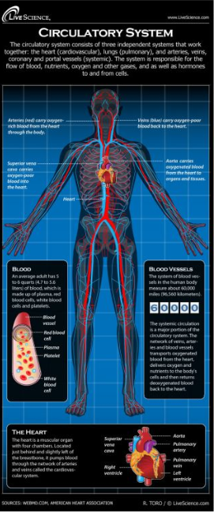
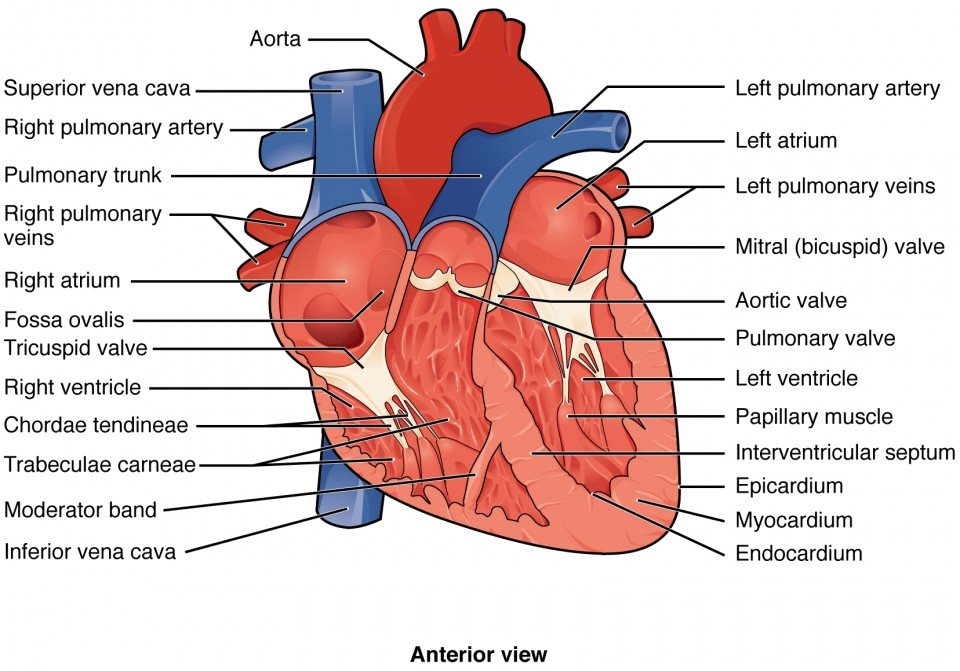

The circulatory system
Read the following article about the circulatory system. The next two task are based on the information in this reading.

The circulatory system:
The circulatory system is one of several systems of the human body that work together to keep a person healthy. The body takes oxygen into the lungs when a person breathes. This oxygen is then transported throughout the body into all of the cells of the body by the circulatory system. The main function of the circulatory system is to carry blood throughout our bodies. The circulatory system circulates or transports blood to and from the heart, and carries oxygen and nutrients to every cell in the body. The circulatory system is connected throughout the body by vessels that transport the blood, oxygen, and nutrients.
There are two main parts of the circulatory system, the heart and blood vessels. The heart contains a total of four chambers, which are enclosed by walls that are thick and muscular. The heart is located between the lungs. It lies just to the left side of the middle of the chest cavity. Two of the chambers are called the left and right ventricles, located in the bottom part of the heart, pump blood out of the heart. The aorta is the largest artery of the heart and it carries blood away from the heart. Blood with oxygen is pumped into the aorta, which travels up along a ventricle and down into the front of the spinal column into the abdomen. The upper part of the heart contains two other chambers, the left and right atria, receive blood into the heart.
Continue on the next tab...
The circulatory system: Heart parts

The left and right atria are the chambers of the heart that receive blood into the heart. The atria are located in the upper part of the heart. The ventricles are located in the bottom part of the heart and pump blood out of the heart. Heart valves separate the four chambers of the heart. The chambers of the heart collect and pump blood, as well as control the blood's direction. The valves open correctly for the blood to empty from the chambers, and close properly so blood does not flow the wrong way. The valves assure that the rest of the body get the right amount of blood.
The heart is actually a muscle; the beating is the moving or pumping of blood into the rest of the body and beats about 60 to 100 times per minute depending on age and health. It beats faster if necessary when the body is need of oxygen, or slower while a person sleeps who would need less oxygen. The blood vessels include arteries, veins, and capillaries which are the paths that carry the blood throughout the body. Arteries carry blood away from the heart, veins carry blood to the heart, and the capillaries connect the arteries and veins. The nutrients that come from food is digested in the body is also transported to all of the cells of the body through the blood vessels of the circulatory system.
The arteries carry blood away from the heart. The arteries are the thickest of the blood vessels. The blood is enriched with oxygen as it is sent through a large artery called the aorta, to the rest of the body. The veins of the circulatory system carry blood back to the heart. Veins are thin and not as flexible as arteries, but are larger in diameter. The capillaries are tiny blood vessels that carry blood between the arteries and the veins. The capillaries deliver nutrients and oxygen to the cells in the body. Carbon dioxide and other waste products are also removed by the capillaries. Capillaries are extremely small, only about one cell thick. If the capillaries were laid end to end they would stretch to about 3000 miles.
In summary, the circulatory system is made up of the heart and thousands of miles of blood vessels called arteries, veins, and capillaries which carry blood, oxygen, and nutrients throughout the different parts of the body.
Retrieved from: softschools.com/the_circulatory_system Go to this link and do the test in it.